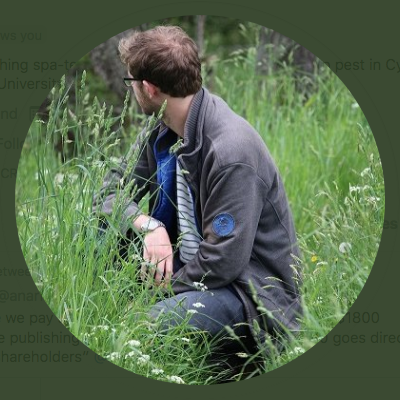
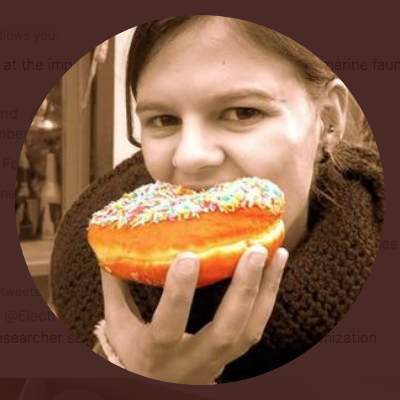

People
Teaching team
Alex Douglas

Alex is a Reader in Biostatistics at the University of Aberdeen and has been teaching (and learning) R for the last 15 years.
- Email: a(dot)douglas(at)abdn(dot)ac(dot)uk
- Web: https://www.abdn.ac.uk/people/a.douglas/
- Twitter: https://twitter.com/Scedacity
- GitHub: https://github.com/alexd106
Deon Roos

Deon is a PhD student in applied ecology at the University of Aberdeen researching spatial variation of the temporal kind in population dynamics. He has been using and teaching R for 5 years.
- Email: deon(dot)roos(at)abdn(dot)ac(dot)uk
- Web: https://www.abdn.ac.uk/people/deon.roos
- Twitter: https://twitter.com/DeonRoos88
- GitHub: https://github.com/Deon88
Ana Couto

Ana is a PhD student in Ecology at the University of Aberdeen looking at the ecology and physics of tidal stream habitats. She has been using and teaching R for 7 years.
- Email: a(dot)couto(dot)17(at)abdn(dot)ac(dot)uk
- Web: https://www.abdn.ac.uk/people/r01ac17
- Twitter: https://twitter.com/AnaSofiaCouto
- GitHub: https://github.com/Anofia
Administrative Contacts
Izzie Buchanan (QUADRAT Partnership Co-ordinator)
- Email: quadrat(at)abdn(dot)ac(dot)uk
- Twitter: https://twitter.com/quadratdtp